Project 3-2: PathTracer
CS 284a Computer graphics & Imaging
2022 Spring Kaleab Belete, Xinwei Zhuang Webpage: https://cal-cs184-student.github.io/sp22-project-webpages-xinwei-zhuang/proj3-2/index.htmlPart 1: Mirror and Glass Materials
Reflection
We defined two function to reflect and refract light. For reflection, it's simply the incident ray reflected in the normal vector of the object, i.e.
wi = (-wo.x, -wo.y, wo.z)
Then to render objects with mirror material, we reflect every incident ray, without any sampling (pdf = 1), and return
reflectance / abs_cos_theta(*wi)
. The maximum ray depth must greater than 1 because we cannot see the object if we only observe direct lighting. It must have at least one bounce.
Refraction
We firstly wrote a helper function for refraction
wi = (- η wo.x, - η wo.y, sign*sqrt(1-η*η*(1-wo.z*wo.z)))
where the sign is opposite to
wo.z, and η = 1.0/ior if light is entering the non-air material, and η = ior if the light is exiting.
We check whether the refraction happens or not (whether it's a total internal reflection) by a discriminant
1-η*η*(1-cos2θ)
If it's negative, then we return false, meaning there's no refraction but only reflection, and update the wo with reflection function. If it's positive, then we further calculate the Schilick's reflection coefficient R by $$ R(\theta) = R_0 + (1-R_0)(1-cos\theta)^2$$ where $R_0 = (\frac{1-ior}{i+ior})^2$.
Based on the R value, we choose whether it's a refraction light or a reflect light with a coin_flip function.
For the reflection ray, we update
wi with reflection function, and set pdf = R, and return R * reflectance / abs_cos_theta(*wi)For the refraction ray, we update wi with refraction function, and set
pdf = 1-R, and return (1-R) * transmittance / abs_cos_theta(*wi) / eta^2 where eta is the same as discussed above. Results combining two material are shown below. Results
All renders are rendered with-t 8 -s 256 - l 4 - m 7
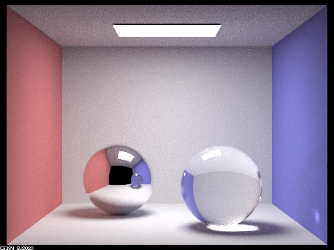
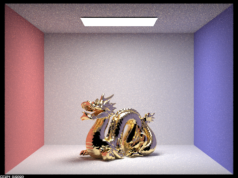
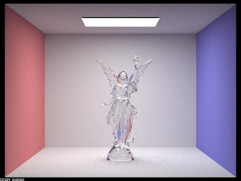
Sequence rendering of six images of scene CBspheres.dae with max_ray_depth 0, 1, 2, 3, 4, 5, and 100 and with 64 samples per pixel and 4 samples per light.
Point out the new multibounce effects that appear in each image.
Explain how these bounce numbers relate to the particular effects that appear.
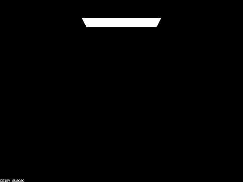
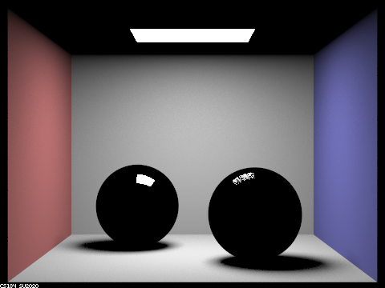
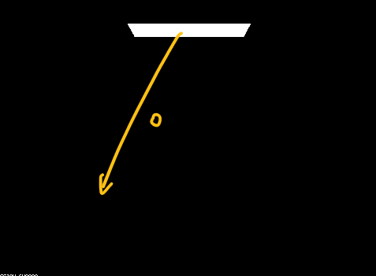
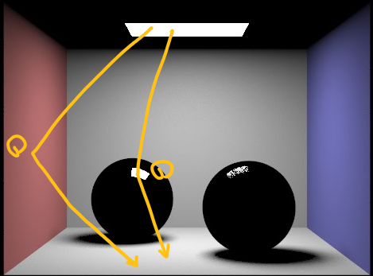
max_ray_depth = 0, there is only the light source that emits light. With max_ray_depth = 1, we can see the sorrounding but we cannot observe objects with glass and mirror material because reflection involves at least 2 bounces, and refraction involves at least 3 bounces.
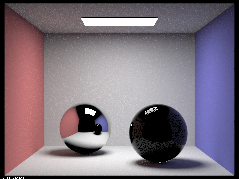
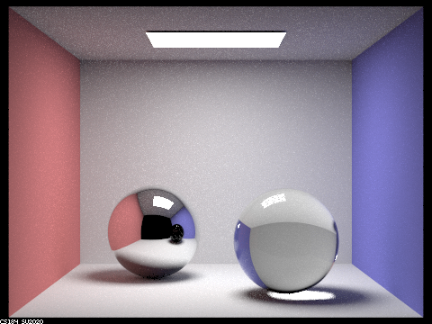
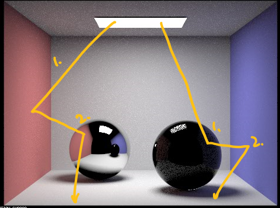
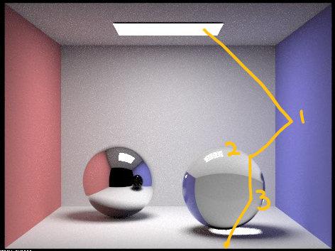
max_ray_depth = 2, we can see the sphere with mirror material, but it doesn't reflect the light from the ceiling (which requires 3 bounces). The glass material has a very dark appearance (a pure reflection so far). With max_ray_depth = 3, we can see the mirror sphere almost correctly appears itself, and the glass material is also appearing with 3 bounces of light. Besides, the light the glass sphere cast to the floor is visible.
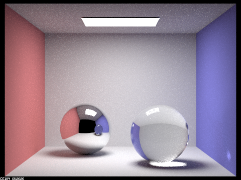
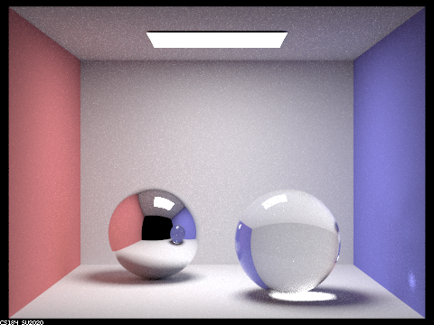
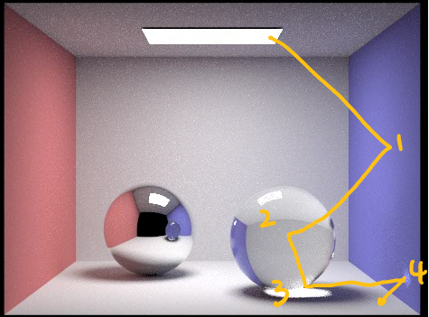
max_ray_depth = 4, we can see two shiny light casted from the glass sphere, one on the floor and one on wall. This happens with 4 bounces of light. With max_ray_depth = 5, there is no significant visual difference other than the general scene is lit up a bit.
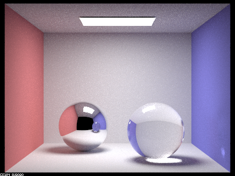
max_ray_depth = 100, there is not noticable difference between ray depth = 100 and ray depth = 5, other than the scene is lit up a little bit.
Part 4: Depth of Field
For these subparts, we recommend using a microfacet BSDF scene to show off the cool out of focus effects you can get with depth of field!In a few sentences, explain the differences between a pinhole camera model and a thin-lens camera model.
Prior to this part we have been using a simple pinhole camera model, which is effectively a camera without a lens passing all represented light in a scene from one side of a pinhole to another, and projecting an image (initially inverted) on the opposite side with the size of the projection being based on the distance between a given represented object and the pinhole. As all light passes through the same simple hole this model struggles to represent images taken by real cameras (we cant have refracted light rays, selective focus, etc...). A thin-lens camera model is a camera approximation that assumes the thickness of the camera lens is negligible(simplifying our representation) while still allowing us to represent concepts like refracting light ray and selective focus(depth of field) based on the other properties of the lens and camera. The implementation for this part is directly taken from the project documentation and draws on generate_ray from the previous assignment to achieve the desired properties of the thin lens as shown in the diagram.
camera.txt used to generate images below
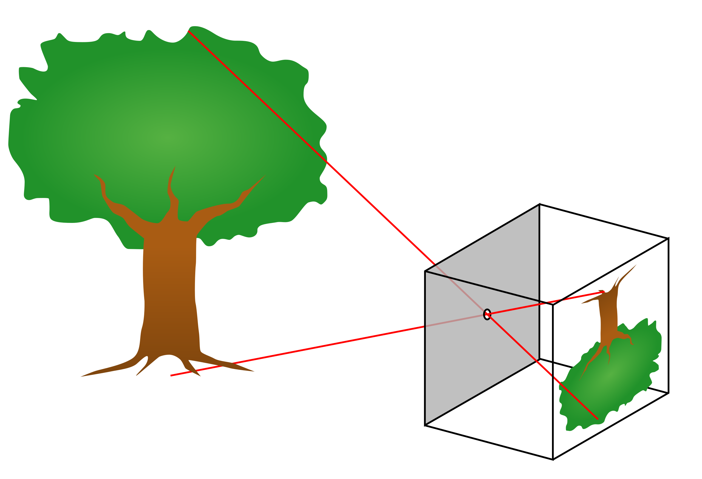

More labled examples can be found in image/P4/Dx/Others/
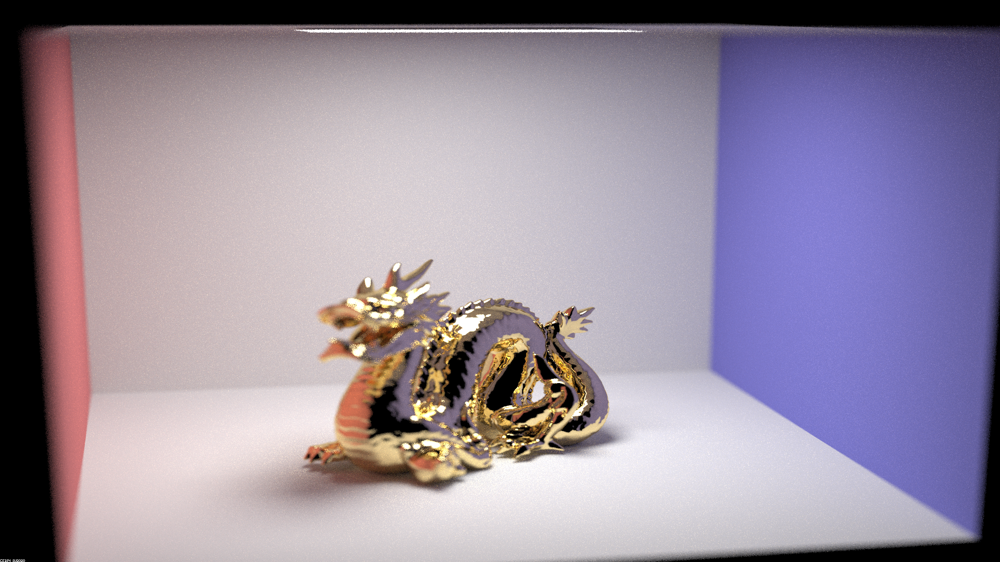

More labled examples can be found in image/P4/Bx/Other/
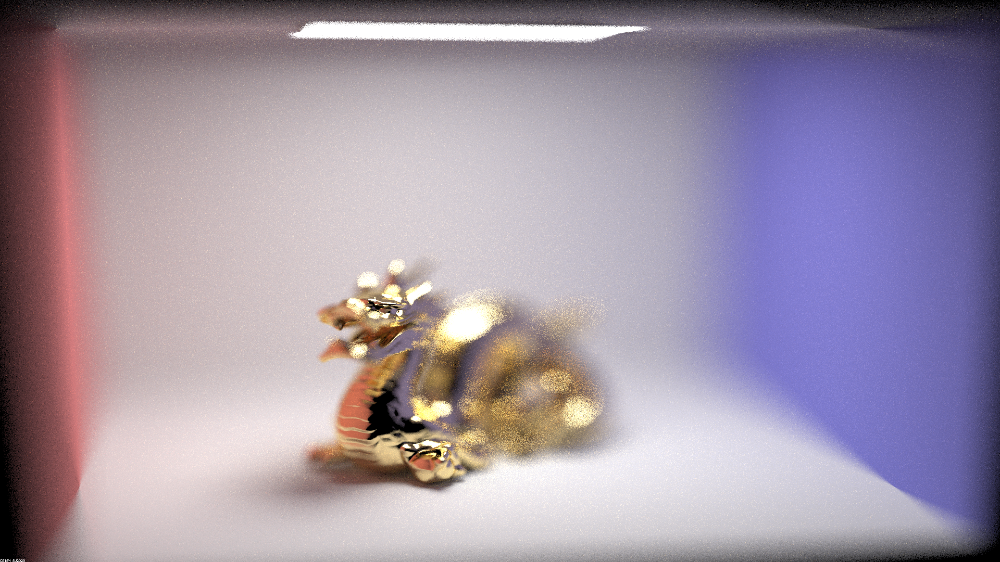
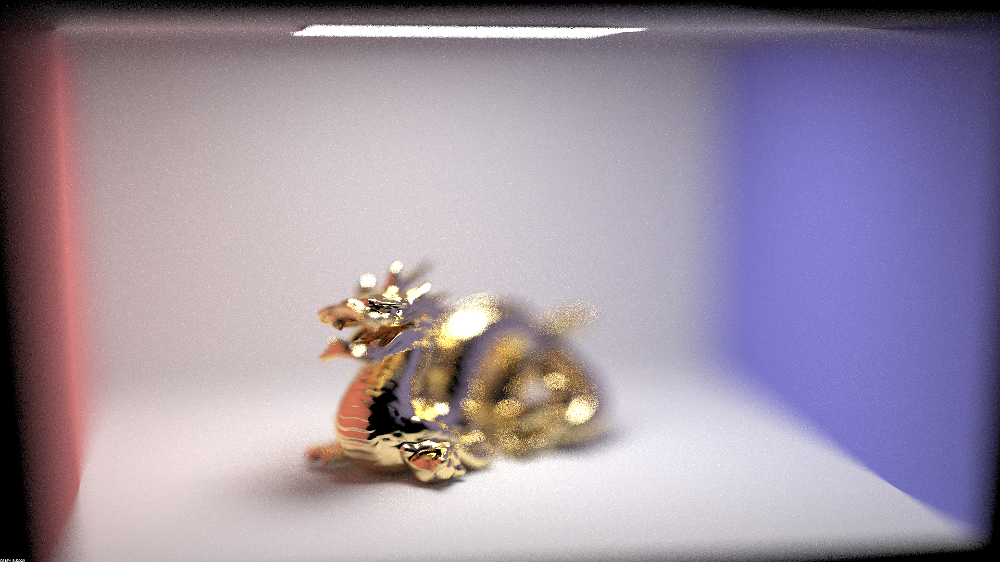
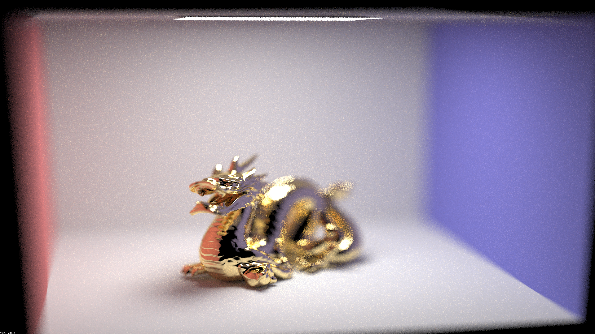
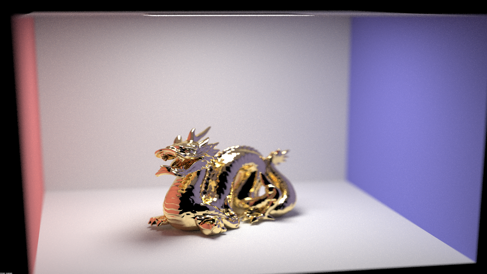